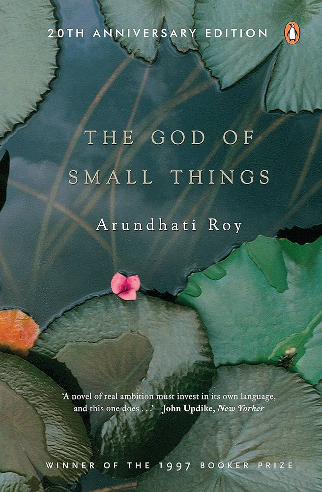

Open to product design roles · 2026
Hi, I’m Aatisha, a product designer who listens first. I’ve untangled research at UW–Madison, made style a game for Amazon × Shopbop and designed Alex, an AI teammate founders called “approachable.”
Before design, I wrote the code (Angular, Spring Boot, a plant monitor that blinked when it was thirsty). It still shows in how I work.
↑ Turn the dial, press print. Every claim comes with a receipt.
01 · Selected work
Four stories, each with receipts.
Hover a folder to peek inside, or click to open the full story.Tap a folder to open the full story.
02 · How I work
Sixty voices. Scattered.
- ListenInterviews, contextual inquiry in the aisles, moderated usability sessions.
- ClusterAffinity mapping until the patterns stop moving.
- DecideOne insight each for the team to build on.
Every note on this board is a real quote or stat from my studies.
03 · Journey
From writing code to designing what it should do.
04 · Lab & notes
Side quests, old code and writing.
05 · Off the clock
I design with the hope of creating impact, even if just a little.
Off-screen, I’m usually reading 
On my shelf
Hover a book.Tap a book.